이클립스 프로젝트 생성
-
D드라이브에 프로젝트명을 적어서 만들어준 뒤 폴더이름을 사진대로 지정해준다.
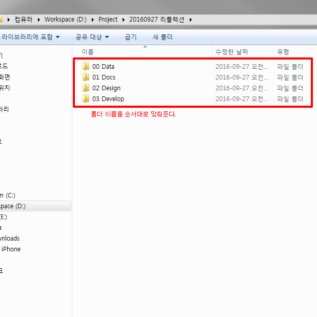 -
03 Develop 폴더 안에 해당 프로젝트에 필요한 eclipse 버전과 tomcat 버전을 차례대로 깐 뒤 폴더를 구분해준다. 작업물들을 넣을 workspace 폴더도 만들어준다.
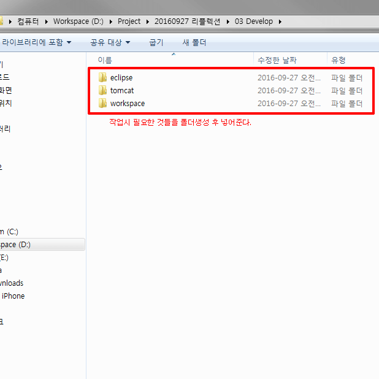 -
03 Develop 폴더 안에 설치한 eclipse를 연 뒤 경로 설정을 workspace로 해준다.
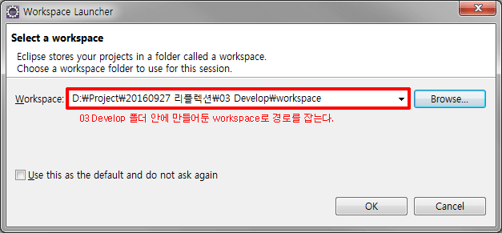 -
eclipse가 열리면 최상단 바에서 File>New>Dynamic Web Project를 열어준다. 창이 열리면, Project name은 영어로 설정해주고, 로컬 서버를 등록해야 이클립스와 페이지를 연동할 수 있으므로, 처음 서버를 등록할 때 New Runtime을 눌러 등록해준다. 이 때, 주의해야할 것은 Finish말고 Next를 눌러야 한다는 것이다.
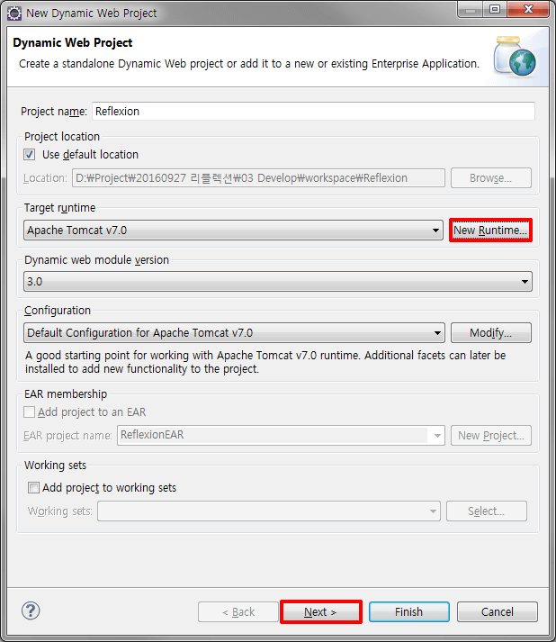 -
Next를 두 번 눌러주면, 하단과 같은 창이 뜨는데 Context root를 폴더 이름 말고 /로 설정해주어 경로를 /에서부터 시작할 수 있게끔 해준다.
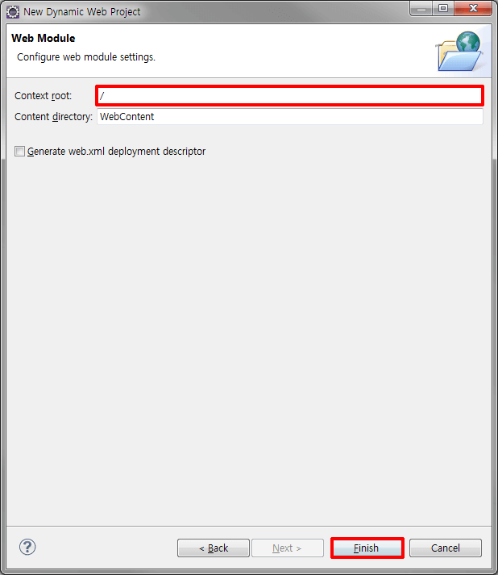 -
5번까지 다 했다면, 이제 eclipse가 설치가 되었고, eclipse내에 로컬 서버를 등록할 차례이다. Window>Show View>Servers를 누른 뒤 하단과 같은 창이 나오면 빨간색 박스 문구를 클릭해준다. 클릭한 뒤 깔아놓은 tomcat을 목록에 Add 해주면 된다.
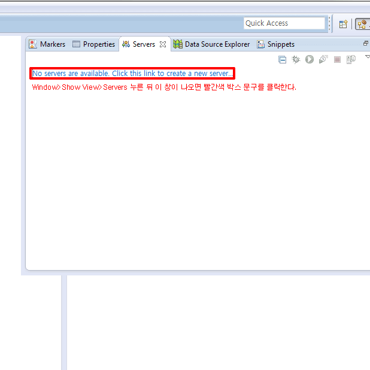 -
Server가 등록되면 6번과 같은 경로로 한 번 더 Server를 연 뒤 설치된 Server명을 더블클릭 해준다. 그러면 하단과 같은 창이 나오는데, 이 때 포트 번호를 변경해준다. 만약 포트 번호를 변경해주지 않으면 다른 프로젝트와 서버가 충돌할 수 있다.
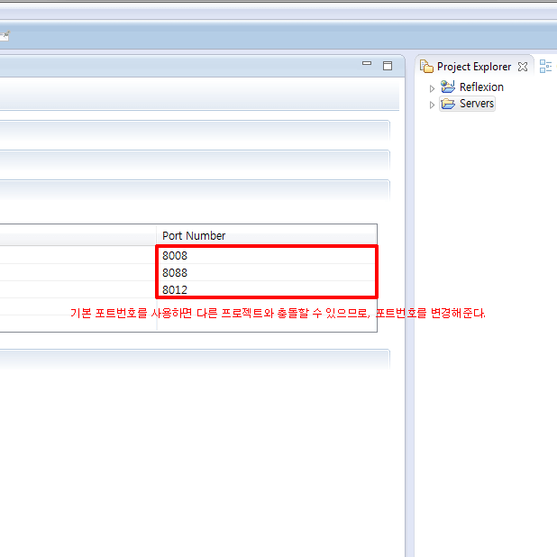 -
이제 eclipse를 사용할 작업환경 셋팅은 다 끝났고, git과 연동하여 작업한 파일을 로컬 서버와 원격 서버에 동시 등록해주는 작업을 해야한다. 원격 서버로 사용할 Repository를 원하는 사이트에 생성해두고, 그 Repository를 Clone한 뒤 받은 URL을 우리가 작업할 폴더에 Git Clone을 눌러 복사 붙여넣기 해준다. Directory설정은 workspace\프로젝트명\context directory명으로 적어준 뒤 OK를 눌러준다.
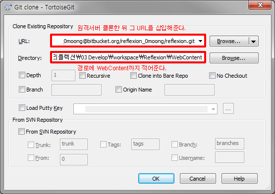
이클립스 환경설정
-
눈이 편안한 작업환경을 위해서 먼저 theme를 설치한다. 설치하는 방법은 하단과 같이 해주면 되고, 가장 첫번째 나오는 theme를 install 한 뒤 eclipse를 재시작 해준다.
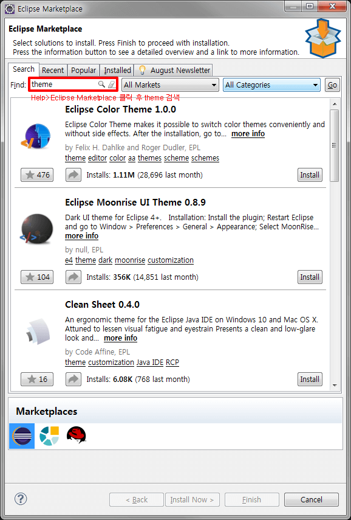 -
Window>Prefences를 눌러 하단에 기입해놓은 경로로 들어간 뒤 Obsidian을 선택한다.
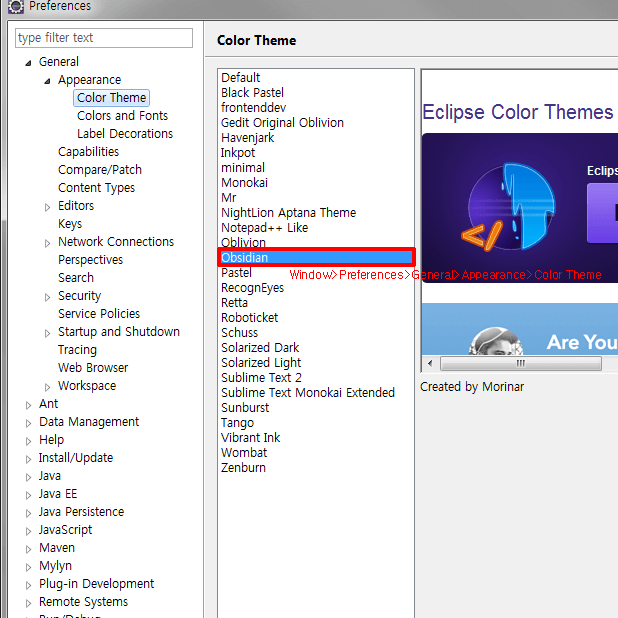 -
Window>Prefences>General>Appearance>Colors and Fonts를 눌러 하단과 같은 창이 뜨면 빨간색 박스를 클릭하고 Edit을 눌러 Courier New 9pt로 설정한다.
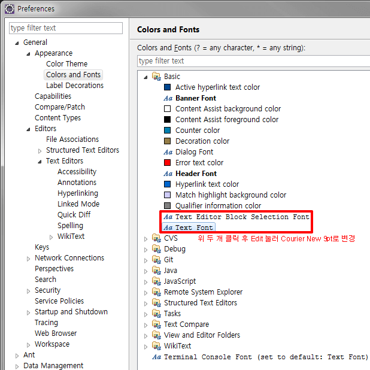 -
Window>Prefences>General>Editors>Text Editors 사진과 같이 설정을 맞춰주고, 빨간색 박스로 표시한 부분을 클릭한다.
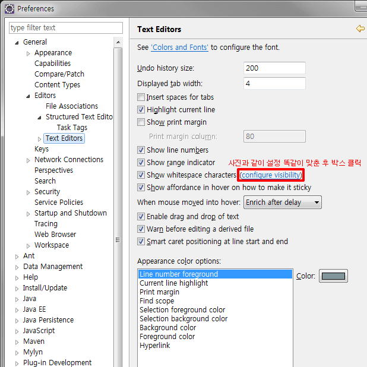 -
새창이 뜨면 사진과 같이 설정해준다.
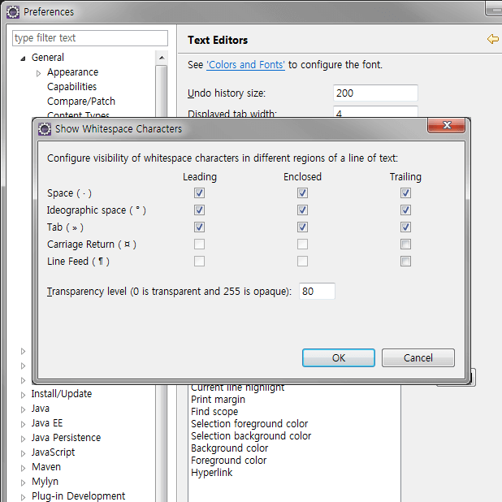 -
Window>Preferences>Web>CSS Files을 눌러 인코딩 언어를 UTF-8로 변경한다. 바로 아래 HTML Files도 열어 인코딩 언어를 변경한다.
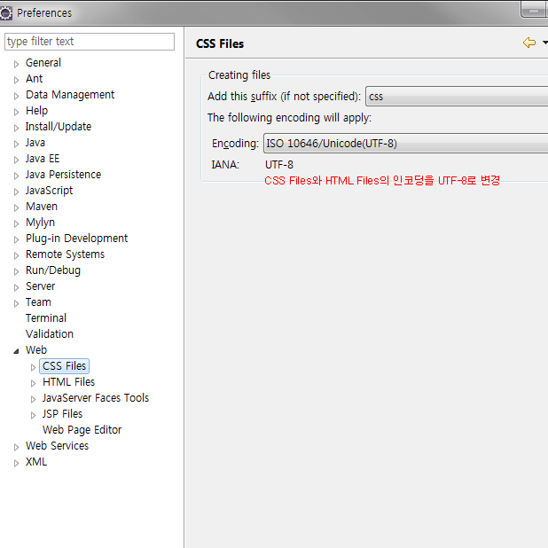 -
작업창에서 마크업시 자동으로 태그가 작성되지 않도록 방지해주는 설정을 해준다. 하단과 같이 설정한다.
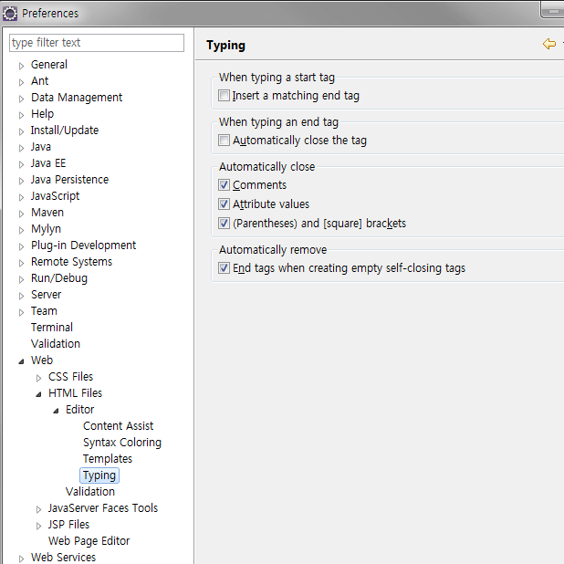